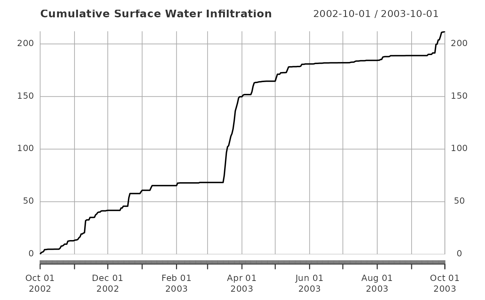

R/rvn_exhaustive_mb_read.R
rvn_exhaustive_mb_read.Rdrvn_exhaustive_mb_read is used to read in the ExhaustiveMassBalance.csv file produced by the modelling Framework Raven.
rvn_exhaustive_mb_read(ff = NA, join_categories = TRUE, tzone = NULL)full file path to the ExhaustiveMassBalance.csv file
boolean whether add to the category tag as a column
name prefix in exhaustivemb output (default TRUE)
string indicating the timezone of the data in ff
data frame from the file with standardized names
vector corresponding to units of each column
vector corresponding to the storage category of each column
Expects a full file path to the ExhaustiveMassBalance.csv file, then reads in the file using read.csv. The main advantage of this function is renaming the columns to nicer names and extracting the units into something that is much easier to read.
ff is the full file path of the ExhaustiveMassBalance.csv file. If the file is located in the current working directory, then simply the name of the file is sufficient.
tzone is a string indicating the timezone of the supplied file. The timezone provided is coded into the resulting data frame using the as.POSIXct function. If no timezone is provided, this is left as an empty string, and is determined by the function as the current time zone.
rvn_hyd_read for reading in the Hydrographs.csv file, and
rvn_exhaustive_mb_read for reading in the
WatershedMassEnergyBalance.csv file
# Read in exhaustive MB file, create plot
ff <- system.file("extdata","run1_ExhaustiveMassBalance.csv", package="RavenR")
embd <- rvn_exhaustive_mb_read(ff)
# Preview data
head(embd$exhaustive_mb)
#> SURFACE_WATER.Flush SURFACE_WATER.Precipitation
#> 2002-10-01 0.00000 0
#> 2002-10-02 -1.61602 0
#> 2002-10-03 -2.09418 0
#> 2002-10-04 -2.58179 0
#> 2002-10-05 -4.45318 0
#> 2002-10-06 -4.47729 0
#> SURFACE_WATER.Infiltration SURFACE_WATER.Baseflow
#> 2002-10-01 0.00000 0.00000
#> 2002-10-02 1.61602 2.76691
#> 2002-10-03 2.09418 3.48391
#> 2002-10-04 2.58179 3.61924
#> 2002-10-05 4.45318 3.71538
#> 2002-10-06 4.47729 3.72349
#> SURFACE_WATER.Baseflow.1 SURFACE_WATER.cumulative
#> 2002-10-01 0.000000 0.00000
#> 2002-10-02 0.503647 3.27055
#> 2002-10-03 1.048760 4.53267
#> 2002-10-04 1.633510 5.25275
#> 2002-10-05 2.256160 5.97154
#> 2002-10-06 2.860690 6.58418
#> SURFACE_WATER.storage SURFACE_WATER.error ATMOSPHERE.Precipitation.1
#> 2002-10-01 0 0.00000 0
#> 2002-10-02 0 3.27055 0
#> 2002-10-03 0 4.53267 0
#> 2002-10-04 0 5.25275 0
#> 2002-10-05 0 5.97154 0
#> 2002-10-06 0 6.58418 0
#> ATMOSPHERE.Canopy.Evaporation ATMOSPHERE.Canopy.Snow.Evaporation
#> 2002-10-01 0.0000000 0
#> 2002-10-02 0.0287100 0
#> 2002-10-03 0.0383652 0
#> 2002-10-04 0.0578384 0
#> 2002-10-05 0.1156140 0
#> 2002-10-06 0.1164830 0
#> ATMOSPHERE.Soil.Evaporation ATMOSPHERE.Soil.Evaporation.1
#> 2002-10-01 0.00000 0.00000
#> 2002-10-02 2.81385 2.81385
#> 2002-10-03 5.09440 5.08951
#> 2002-10-04 6.39129 6.38844
#> 2002-10-05 9.30426 9.30097
#> 2002-10-06 10.74590 10.54110
#> ATMOSPHERE.cumulative.1 ATMOSPHERE.storage.1 ATMOSPHERE.error.1
#> 2002-10-01 0.00000 0.00000 0.00000e+00
#> 2002-10-02 5.65641 5.65641 1.77636e-15
#> 2002-10-03 10.22230 10.22230 -1.77636e-15
#> 2002-10-04 12.83760 12.83760 1.06581e-14
#> 2002-10-05 18.72080 18.72080 -3.55271e-15
#> 2002-10-06 21.40350 21.40350 7.10543e-15
#> ATMOS_PRECIP.Precipitation.2 ATMOS_PRECIP.Precipitation.3
#> 2002-10-01 0 0
#> 2002-10-02 0 0
#> 2002-10-03 0 0
#> 2002-10-04 0 0
#> 2002-10-05 0 0
#> 2002-10-06 0 0
#> ATMOS_PRECIP.Precipitation.4 ATMOS_PRECIP.Precipitation.5
#> 2002-10-01 0 0.00000
#> 2002-10-02 0 -3.43998
#> 2002-10-03 0 -4.61950
#> 2002-10-04 0 -6.68329
#> 2002-10-05 0 -13.09980
#> 2002-10-06 0 -13.22450
#> ATMOS_PRECIP.Precipitation.6 ATMOS_PRECIP.Precipitation.7
#> 2002-10-01 0 0
#> 2002-10-02 0 0
#> 2002-10-03 0 0
#> 2002-10-04 0 0
#> 2002-10-05 0 0
#> 2002-10-06 0 0
#> ATMOS_PRECIP.Precipitation.8 ATMOS_PRECIP.Precipitation.9
#> 2002-10-01 0 0
#> 2002-10-02 0 0
#> 2002-10-03 0 0
#> 2002-10-04 0 0
#> 2002-10-05 0 0
#> 2002-10-06 0 0
#> ATMOS_PRECIP.Precipitation.10 ATMOS_PRECIP.Precipitation.11
#> 2002-10-01 0 0.0000000
#> 2002-10-02 0 -0.0287100
#> 2002-10-03 0 -0.0383652
#> 2002-10-04 0 -0.0578384
#> 2002-10-05 0 -0.1156140
#> 2002-10-06 0 -0.1164830
#> ATMOS_PRECIP.Precipitation.12 ATMOS_PRECIP.Precipitation.13
#> 2002-10-01 0 0
#> 2002-10-02 0 0
#> 2002-10-03 0 0
#> 2002-10-04 0 0
#> 2002-10-05 0 0
#> 2002-10-06 0 0
#> ATMOS_PRECIP.cumulative.2 ATMOS_PRECIP.storage.2
#> 2002-10-01 0.00000 0.00000
#> 2002-10-02 -3.46869 -3.46869
#> 2002-10-03 -4.65787 -4.65787
#> 2002-10-04 -6.74113 -6.74113
#> 2002-10-05 -13.21540 -13.21540
#> 2002-10-06 -13.34100 -13.34100
#> ATMOS_PRECIP.error.2 PONDED_WATER.Infiltration.1
#> 2002-10-01 0.00000e+00 0.00000
#> 2002-10-02 4.44089e-16 -1.82396
#> 2002-10-03 -1.77636e-15 -2.52532
#> 2002-10-04 -1.77636e-15 -4.10150
#> 2002-10-05 -3.55271e-15 -8.64665
#> 2002-10-06 -1.77636e-15 -8.74725
#> PONDED_WATER.Infiltration.2 PONDED_WATER.Precipitation.14
#> 2002-10-01 0.00000 0.00000
#> 2002-10-02 -1.61602 3.43998
#> 2002-10-03 -2.09418 4.61950
#> 2002-10-04 -2.58179 6.68329
#> 2002-10-05 -4.45318 13.09980
#> 2002-10-06 -4.47729 13.22450
#> PONDED_WATER.Snow.Melt..Refreeze PONDED_WATER.Overflow
#> 2002-10-01 0 0
#> 2002-10-02 0 0
#> 2002-10-03 0 0
#> 2002-10-04 0 0
#> 2002-10-05 0 0
#> 2002-10-06 0 0
#> PONDED_WATER.cumulative.3 PONDED_WATER.storage.3
#> 2002-10-01 0.00000e+00 0.00000e+00
#> 2002-10-02 0.00000e+00 0.00000e+00
#> 2002-10-03 0.00000e+00 1.01511e-17
#> 2002-10-04 -8.88178e-16 -9.44248e-18
#> 2002-10-05 3.55271e-15 -7.13371e-17
#> 2002-10-06 0.00000e+00 3.30391e-18
#> PONDED_WATER.error.3 SOIL[0].Soil.Evaporation.2
#> 2002-10-01 0.00000e+00 0.00000
#> 2002-10-02 0.00000e+00 -2.81385
#> 2002-10-03 -1.01511e-17 -5.09440
#> 2002-10-04 -8.78736e-16 -6.39129
#> 2002-10-05 3.62405e-15 -9.30426
#> 2002-10-06 -3.30391e-18 -10.74590
#> SOIL[0].Soil.Evaporation.3 SOIL[0].Precipitation.15
#> 2002-10-01 0.00000 0
#> 2002-10-02 -2.81385 0
#> 2002-10-03 -5.08951 0
#> 2002-10-04 -6.38844 0
#> 2002-10-05 -9.30097 0
#> 2002-10-06 -10.54110 0
#> SOIL[0].Infiltration.3 SOIL[0].Capillary.Rise SOIL[0].cumulative.4
#> 2002-10-01 0.00000 0.000000 0.00000
#> 2002-10-02 1.82396 0.854061 -2.94968
#> 2002-10-03 2.52532 1.813210 -5.84539
#> 2002-10-04 4.10150 2.803150 -5.87509
#> 2002-10-05 8.64665 3.753800 -6.20479
#> 2002-10-06 8.74725 4.667320 -7.87246
#> SOIL[0].storage.4 SOIL[0].error.4 SOIL[1].Capillary.Rise.1
#> 2002-10-01 10.00000 -10 0.000000
#> 2002-10-02 7.05032 -10 -0.854061
#> 2002-10-03 4.15461 -10 -1.813210
#> 2002-10-04 4.12491 -10 -2.803150
#> 2002-10-05 3.79521 -10 -3.753800
#> 2002-10-06 2.12754 -10 -4.667320
#> SOIL[1].Percolation SOIL[1].Baseflow.2 SOIL[1].Precipitation.16
#> 2002-10-01 0.00000 0.00000 0
#> 2002-10-02 -1.44600 -2.76691 0
#> 2002-10-03 -2.89200 -3.48391 0
#> 2002-10-04 -4.33800 -3.61924 0
#> 2002-10-05 -5.78400 -3.71538 0
#> 2002-10-06 -5.99471 -3.72349 0
#> SOIL[1].Flush.1 SOIL[1].cumulative.5 SOIL[1].storage.5
#> 2002-10-01 0.00000 0.00000 10.0000000
#> 2002-10-02 1.61602 -3.45095 6.5490500
#> 2002-10-03 2.09418 -6.09493 3.9050700
#> 2002-10-04 2.58179 -8.17860 1.8214000
#> 2002-10-05 4.45318 -8.80001 1.1999900
#> 2002-10-06 4.47729 -9.90823 0.0917699
#> SOIL[1].error.5 SOIL[2].Baseflow.3 SOIL[2].Precipitation.17
#> 2002-10-01 -10 0.000000 0
#> 2002-10-02 -10 -0.503647 0
#> 2002-10-03 -10 -1.048760 0
#> 2002-10-04 -10 -1.633510 0
#> 2002-10-05 -10 -2.256160 0
#> 2002-10-06 -10 -2.860690 0
#> SOIL[2].Percolation.1 SOIL[2].cumulative.6 SOIL[2].storage.6
#> 2002-10-01 0.00000 0.000000 10.0000
#> 2002-10-02 1.44600 0.942353 10.9424
#> 2002-10-03 2.89200 1.843240 11.8432
#> 2002-10-04 4.33800 2.704490 12.7045
#> 2002-10-05 5.78400 3.527840 13.5278
#> 2002-10-06 5.99471 3.134020 13.1340
#> SOIL[2].error.6 SNOW_LIQ.Snow.Refreeze SNOW_LIQ.Overflow.1
#> 2002-10-01 -10 0 0
#> 2002-10-02 -10 0 0
#> 2002-10-03 -10 0 0
#> 2002-10-04 -10 0 0
#> 2002-10-05 -10 0 0
#> 2002-10-06 -10 0 0
#> SNOW_LIQ.Precipitation.18 SNOW_LIQ.cumulative.7 SNOW_LIQ.storage.7
#> 2002-10-01 0 0 0
#> 2002-10-02 0 0 0
#> 2002-10-03 0 0 0
#> 2002-10-04 0 0 0
#> 2002-10-05 0 0 0
#> 2002-10-06 0 0 0
#> SNOW_LIQ.error.7 SNOW.Snow.Melt..Refreeze.1 SNOW.Snow.Refreeze.1
#> 2002-10-01 0 0 0
#> 2002-10-02 0 0 0
#> 2002-10-03 0 0 0
#> 2002-10-04 0 0 0
#> 2002-10-05 0 0 0
#> 2002-10-06 0 0 0
#> SNOW.Precipitation.19 SNOW.cumulative.8 SNOW.storage.8 SNOW.error.8
#> 2002-10-01 0 0 0 0
#> 2002-10-02 0 0 0 0
#> 2002-10-03 0 0 0 0
#> 2002-10-04 0 0 0 0
#> 2002-10-05 0 0 0 0
#> 2002-10-06 0 0 0 0
#> CANOPY.Canopy.Evaporation.1 CANOPY.Precipitation.20
#> 2002-10-01 0.0000000 0.0000000
#> 2002-10-02 -0.0287100 0.0287100
#> 2002-10-03 -0.0383652 0.0383652
#> 2002-10-04 -0.0578384 0.0578384
#> 2002-10-05 -0.1156140 0.1156140
#> 2002-10-06 -0.1164830 0.1164830
#> CANOPY.cumulative.9 CANOPY.storage.9 CANOPY.error.9
#> 2002-10-01 0 0 0
#> 2002-10-02 0 0 0
#> 2002-10-03 0 0 0
#> 2002-10-04 0 0 0
#> 2002-10-05 0 0 0
#> 2002-10-06 0 0 0
#> CANOPY_SNOW.Canopy.Snow.Evaporation.1 CANOPY_SNOW.Precipitation.21
#> 2002-10-01 0 0
#> 2002-10-02 0 0
#> 2002-10-03 0 0
#> 2002-10-04 0 0
#> 2002-10-05 0 0
#> 2002-10-06 0 0
#> CANOPY_SNOW.cumulative.10 CANOPY_SNOW.storage.10
#> 2002-10-01 0 0
#> 2002-10-02 0 0
#> 2002-10-03 0 0
#> 2002-10-04 0 0
#> 2002-10-05 0 0
#> 2002-10-06 0 0
#> CANOPY_SNOW.error.10
#> 2002-10-01 0
#> 2002-10-02 0
#> 2002-10-03 0
#> 2002-10-04 0
#> 2002-10-05 0
#> 2002-10-06 0
# Plot data
plot(embd$exhaustive_mb$SURFACE_WATER.Infiltration,
main="Cumulative Surface Water Infiltration")
